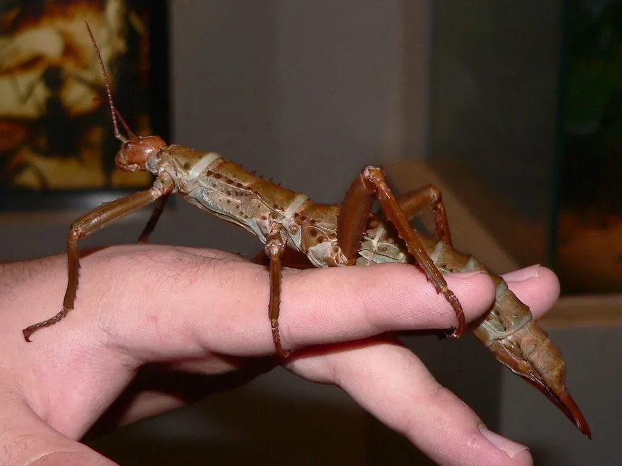

昆虫 · 动物界
巨棘竹节虫 Eurycantha calcarata

体黑褐、全身布满棘刺的大型竹节虫，雄虫后足腿节有粗大弯刺，夜行取食榕树与芒果叶，原产于新几内亚。
- 分类
- 门节肢动物门纲昆虫纲目䗛目科䗛科属巨棘竹节虫属
- 栖息环境
- 热带雨林的林下灌丛和树干上，白天静止于枝叶间
- 地理分布
- 新几内亚及附近岛屿的热带雨林
- 保护级别
- 尚无保护级别；雨林砍伐与宠物贸易带来一定压力
物种志
巨棘竹节虫的体长可达十至十二厘米，体形粗壮，体色黑褐至深褐，体表粗糙，密布颗粒和棘刺，头部较小，触角短，复眼小。它的前胸背板两侧有刺，腹部各节边缘也有小刺，整体看上去像一截带刺的枯枝。雄虫的后足腿节上有一根粗大而弯曲的黑色巨刺，用来夹击敌害，巨棘竹节虫之名由此而来，雌虫的刺则小得多。
它原产于新几内亚及附近岛屿，栖息在热带雨林的林下灌丛和树干上，是夜行性昆虫，白天静止不动，靠体色和形态伪装成枯枝，夜间爬行取食榕树、芒果、番石榴等植物的叶片。它属于渐变态昆虫，卵产于土中或落叶层下，卵形似小种子，若虫孵化后经数次蜕皮长成成虫，全过程约需数月。雌虫体型比雄虫大，腹部更宽，产卵量可达上百粒。它尚无保护级别，在原产地分布较广，但雨林砍伐会压缩其栖息地，宠物贸易也带来一定捕捉压力。
形态与习性
- 体长可达十至十二厘米，体形粗壮
- 体表黑褐色，密布颗粒与棘刺
- 雄虫后足腿节有一根粗大弯曲的黑色巨刺
- 变态渐变态，卵产于土中或落叶层下
- 食性夜行取食榕树、芒果、番石榴叶片
- 分布新几内亚及附近岛屿的热带雨林
趣味知识
- 雄虫后腿上那根弯刺能夹人，被夹住手指会疼得甩手。
- 它白天像一截带刺的枯枝，贴在树干上一动不动。
- 它把卵产在土里，卵粒像小种子，孵化要等上几个月。